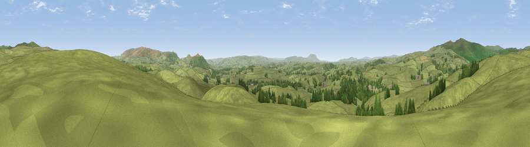

Viewpoint near Airton
#12546 in England · top 22% of its area beats it · near Airton · open accessWhere it is
The exact computed spot (SD 91475 59675). Click the marker for map links.
Public access: this spot lies on mapped open-access land (CRoW Act 2000) — you may roam here on foot. Computed from Natural England's CRoW access layer and OpenStreetMap rights of way — not the legal definitive map. Always verify locally.
The view, rendered

A 360° render of this exact spot computed from the terrain model, tree cover and land cover — summer colours, afternoon light, calibrated against photographs of famous viewpoints. Real trees, hedges and buildings will differ in detail.
The panorama
Grey silhouette: terrain skyline in each direction (720 bearings, Earth curvature and refraction included). Dashed green: skyline with trees (+15 m) and buildings (+8 m) as obstacles. Blue strip: how far the ground is visible on each bearing.
Where the view opens
Wedge length = distance to the farthest visible ground on that bearing (vegetation-aware). Rings at 10, 25 and 50 km.
What fills the view
92% grassland · 7% woodland ·
Angular shares of the visible panorama (visual magnitude), not map area. Landscape diversity 0.13 (0–1 Shannon).
Key numbers
More beautiful places nearby
The staircase of upgrades: each row has a higher view potential than everything closer. Driving times are estimates from straight-line distance, calibrated against real road routing — check an actual route before setting out.
| Place | Direction | Drive | Score |
|---|---|---|---|
| Air Hill | NE · 0 km | ~1 min | 61.5 |
| Viewpoint near Malham | NNE · 3 km | ~8 min | 67.8 |
| Kirkby Fell | NW · 6 km | ~12 min | 74.5 |
| Cracoe Fell | E · 8 km | ~16 min | 75.1 |
| Pen-y-ghent | NNW · 16 km | ~28 min | 75.8 |
| Viewpoint near Kettlewell | NNE · 19 km | ~32 min | 76.6 |
| Viewpoint near Buckden | NNE · 20 km | ~33 min | 77.3 |
| Little Ingleborough | NW · 22 km | ~37 min | 78.8 |
54.03299, -2.13164 · source: screening · position refined by local search. Computed location — check access rights before visiting.